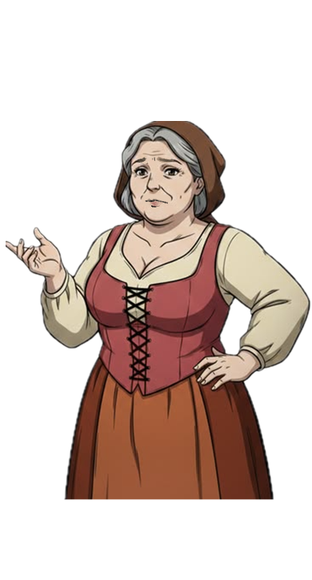

You
Exhausted from the heavy warnings of the local villagers, you sink into your bed on the second floor of the tavern and pass out into a deep, restless sleep...
Press [ Enter ] or Click Box to sleep